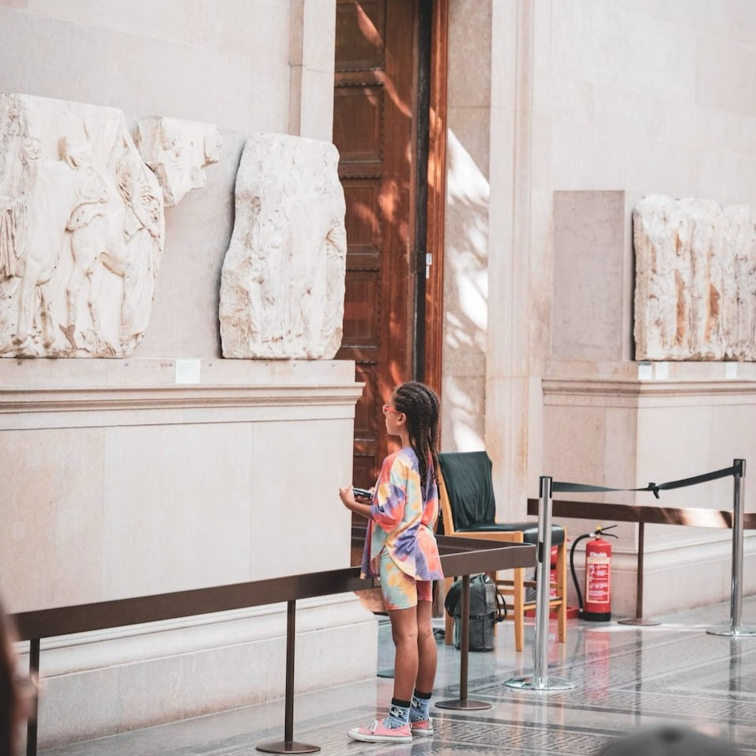

Explore
For kids
Are you a young person looking to learn more about science? Come on down to our museum, there's plenty to see and do. You can learn about Newtonian physics from our bumper swing, or why not travel back in time and meet our resident Woolly Mammoth? Our exhibits are designed to be accessible for interested minds, so make sure you come ready to learn and explore.
We also have the Young Stars club which meets once a week on a Saturday between 10:00 and 13:00 where you'll get to explore and experiment with our team of experts.
During the school holidays we run special holiday clubs where you can join other children your age to go on a journey of discovery. Each holiday we pick a new theme to explore. To find out more about the holiday club and how you can join, send us a message.
For teachers
As a community-driven museum, we want to work with schools to create places of learning and exploring. Our team are on hand to give your students guided tours of the museum, teach them in our learning laboratory, and provide great video presentations that will excite and inspire them.
We believe that learning should be hands-on, engaging, and memorable. That's why our educational programs are designed to complement classroom learning while sparking curiosity and creativity. Whether your students are discovering the wonders of science, exploring local history, or diving into the world of technology, there's something here for every curious mind.
Please get in touch with us here to find out more about our facilities and to arrange a time to bring your students through for a visit.
For researchers
Are you looking to get involved with our team of researchers and academics? Our museum offers a range of opportunities for collaboration, discovery, and contribution. Whether you're conducting independent research or looking to partner on a larger project, we welcome your expertise and curiosity.
We provide access to an extensive collection of online records, well-equipped laboratory spaces, and archival materials to support a wide variety of academic and scientific inquiries.
From historical studies to science-based investigations, our museum is a dynamic hub for research and exploration. We are always eager to support new projects, share resources, and learn together. If you're interested in working with us, please reach out. We'd love to hear about your ideas and explore how we can support your research goals.
Useful information
For all inquiries related to our Holiday Clubs, Student-Guided Tours, or Research Opportunities, please don't hesitate to reach out to us on Email: community.science@gmail.com or through our contact form.
Whether you're a teacher planning a visit, a parent looking to register your child for an upcoming holiday program, or a researcher interested in using our facilities, we're here to help. Our team will get back to you promptly with all the information you need to make your visit or collaboration a success.
Contact formYoung Stars Club
Join us every Saturday from 10:00 to 13:00 for our fun and educational Young Stars Club! The club is open to children and packed with hands-on activities and discoveries. Spaces are limited to 20 children, so we recommend getting in touch and purchasing your ticket at least one week in advance to secure your spot.
Holiday Clubs
Our Holiday Club runs during school holidays and is packed with fun, hands-on activities for curious young minds! The theme for each session will be announced one month in advance, so stay tuned for updates and get ready to explore something exciting!
School Trips
If you're planning a school trip to the museum, please make sure the school or teacher contacts us at least one month in advance. When booking, remember to include the number of students attending so we can prepare the best possible experience for your group.